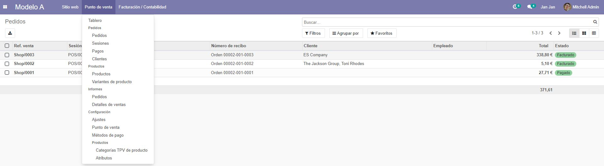
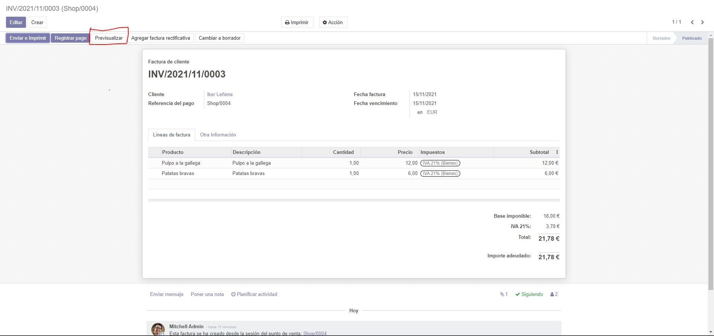
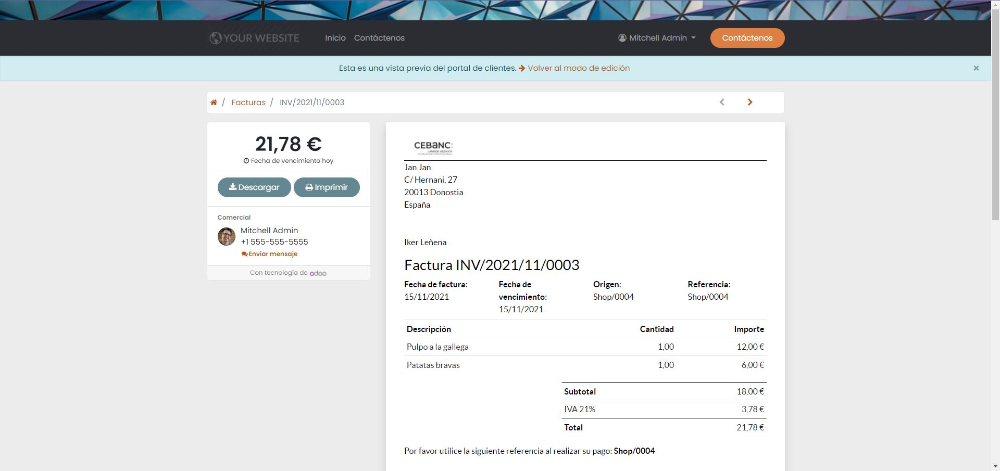

Dentro del modelo A poniendo encima el ratón se clicka en la opción de pedidos.
A continuación, se selecciona el pedido del que se quiere la factura y su previsualización para poder utilizarla como orden de cocina.
Lo que nos lleva a la cabecera de pedido, dónde se encuentra la opción de previsualización.
Pinchamos en previsualizar y nos lleva a la siguiente página
Dentro de esta solo tenemos que clickar en el botón de imprimir y podremos imprimir la factura para poder usarla como orden de cocina.